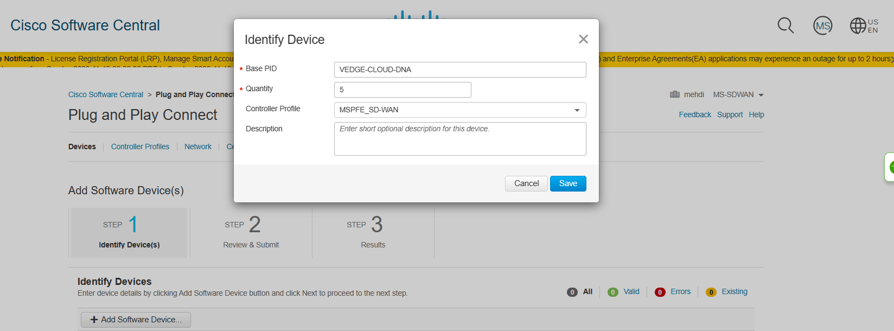

Télécharger le logiciel de Cisco
Smart Account: Pour obtenir le logiciel SD-WAN de Cisco, nous devons suivre un processus simple. Tout d'abord, assurons-nous que nous avons un contrat de service valide (contacter votre représentant Cisco).
Guide de Téléchargement du Logiciel SD-WAN Cisco
1. Accéder au Portail de Téléchargement
- La première étape consiste à accéder au
portail de téléchargementde Cisco. Nous pouvons le faire en nous rendant sur : Cisco Software Central.

2. Gérer le Compte Smart
- Une fois sur le portail de téléchargement, nous devrons nous connecter avec
notre compteCisco. Une fois connecté, sélectionnez "Manage Smart Account."

3. Créer un Compte Virtuel
- Maintenant, nous allons créer
un compte virtuel. Cela permettra de gérer noslicenceset téléchargements de manière organisée. Donnons un nomMS-SDWANà notre compte virtuel et assurons-nous de le définir en tant que "Private" pour plus de sécurité. Cliquons sur "Save."


Note
Notre compte virtuel devrait maintenant être créé et visible sur le portail.

4. Créer un Profil de Contrôleur vBond
- La prochaine étape est de créer un
profil de contrôleur vBond. Revenons à la page principal comme nous l'avons commencé, puis cliquez sur le lien "Plug and Play Connect."

- Sélectionnons le
compte virtuelque nous avons créé précédemment, puis cliquons sur "Controller Profiles." :

- Cliquons sur "
Add Profile", et Sélectionnons "VBOND" dans le menu déroulant. :


- Donnons un nom au profil et spécifions le
nom de l'organisation. Définissons le contrôleur principal surIPv4et ajoutez l'adresse IP nécessaire.
Note
Nous avons la flexibilité d'utiliser n'importe quelle adresse de notre choix.

- Cliquons sur "
Next," confirmons nos paramètres, puis cliquons sur "Submit." Enfin, cliquons sur "Done" pour confirmer lacréation du profil.


5. Ajouter des Appareils Logiciels
- Accédons à la section "
Devices" et sélectionner "Add Software Devices."

- Cliquons sur "
Add Software Device." Dans la zone PID de base, commençons à taper "VEDGE-CLOUD-DNA" et sélectionne-le dans la liste déroulante lorsqu'il apparaît. Spécifions laquantitésouhaitée (par exemple, 5, ce qui est généralement une bonne option), et sélectionnons lenom du profilque nous avons créé plus tôt.

Note
Il y a une limite de 20 noeuds "gratuits".
- Cliquons sur "
Save," puis "Next," et enfin, "Submit." Notre demande sera traitée, et nous recevrons un e-mail de confirmation une fois qu'elle sera terminée.

6. Vérifier nos Appareils
- Habituellement, ce processus est assez rapide. Quelques instants et actualiser la page. Nous devrions maintenant voir vos appareils ajoutés à notre compte.

Note
Répétez le processus et ajoutez des ../images CSR1000
7. Fichier de Provisionnement
- Retournons aux profils de contrôleur et sélectionnez le
fichier de provisionnement:

- Sélectionnons l'option "
18.3 et plus récent" et téléchargeons le fichier correspondant.


8. Téléchargement des Images du Logiciel
La dernière étape consiste à télécharger les images du logiciel. Si nous utilisons EVE-NG, il est recommandé de rechercher les versions QCOW.
- Pour ce faire, retournons sur le site Web principal de Cisco et effectuons une recherche pour "
sd-wan" Nous pourrons télécharger les images dont nous avons besoin.

Ci-dessous, nous trouverons les liens directs pour gagner du temps :
| Logiciel | Informations sur le Fichier |
|---|---|
| vEdge Software | viptela-edge-20.9.4-genericx86-64.qcow2 |
| vManage Software | viptela-vmanage-20.9.4.1-genericx86-64.qcow2 |
| vSmart Software | viptela-smart-20.9.4-genericx86-64.qcow2 |
| CSR 1000V Series IOS XE SD-WAN | csr1000v-ucmk9.16.12.5.qcow2 |
| ASR 1000 Series IOS XE SD-WAN | asr1001x-universalk9.17.09.04.SPA.bin |
| ISR 1000 Series IOS XE SD-WAN | c1100-ucmk9.16.12.5.SPA.bin |
| ISR 4000 Series IOS XE SD-WAN | isr4200-ucmk9.16.12.5.SPA.bin |
Téléchargement Routeur & Switch
Pour les routeurs et les commutateurs, j'utilise respectivement vIOS 15.9 et vIOS-L2 15.2.
| Logiciel | Informations sur le Fichier |
|---|---|
| Router node | vios-adventerprisek9-m.spa.159-3.m6.qcow2 |
| Switch node | vios_l2-adventerprisek9-m.ssa.high_iron_20200929.qcow2 |